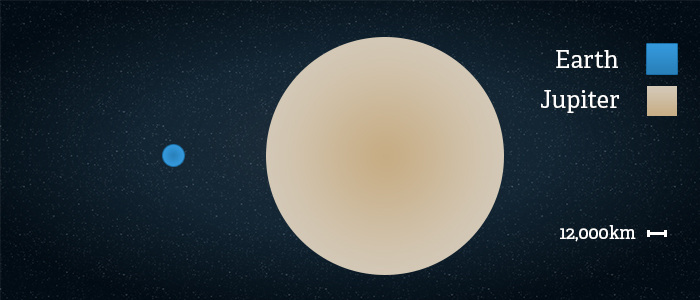
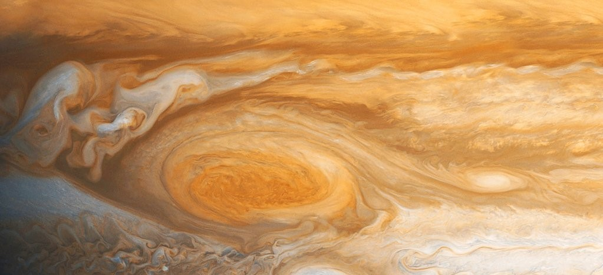

Jupiter is the fifth planet from our Sun and is, by far, the largest planet in the solar
system – more than twice as massive as all the other planets combined. Jupiter's stripes and swirls are actually cold, windy clouds of
ammonia and water, floating in an atmosphere of hydrogen and helium. Jupiter’s iconic Great Red Spot is a giant storm bigger than Earth
that has raged for hundreds of years. Jupiter is surrounded by dozens of moons. Jupiter also has several rings, but unlike the famous
rings of Saturn, Jupiter’s rings are very faint and made of dust, not ice.
Structure
The composition of Jupiter is similar to that of the Sun—mostly hydrogen and helium. Deep in the atmosphere,
pressure and temperature increase, compressing the hydrogen gas into a liquid. This gives Jupiter the largest ocean in the solar system—an
ocean made of hydrogen instead of water. Scientists think that, at depths perhaps halfway to the planet's center, the pressure becomes so
great that electrons are squeezed off the hydrogen atoms, making the liquid electrically conducting like metal. Jupiter's fast rotation is
thought to drive electrical currents in this region, generating the planet's powerful magnetic field. It is still unclear if, deeper down,
Jupiter has a central core of solid material or if it may be a thick, super-hot and dense soup. It could be up to 50,000 degrees Celsius
down there, made mostly of iron and silicate minerals (similar to quartz).
Size
With a radius of 69,911 kilometers, Jupiter is 11 times wider than Earth. If Earth were the size of a nickel,
Jupiter would be about as big as a basketball. From an average distance of 778 million kilometers, Jupiter is 5.2 astronomical units away
from the Sun. One astronomical unit (abbreviated as AU), is the distance from the Sun to Earth. From this distance, it takes Sunlight 43 minutes
to travel from the Sun to Jupiter.


Surface
As a gas giant, Jupiter doesn’t have a true surface. The planet is mostly swirling gases and liquids. While a
spacecraft would have nowhere to land on Jupiter, it wouldn’t be able to fly through unscathed either. The extreme pressures and temperatures
deep inside the planet crush, melt and vaporize spacecraft trying to fly into the planet.